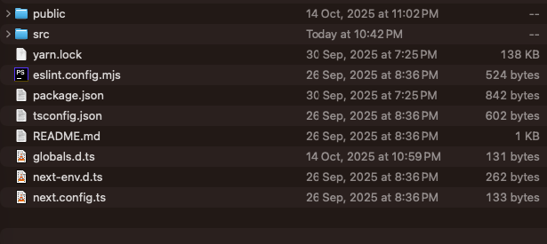
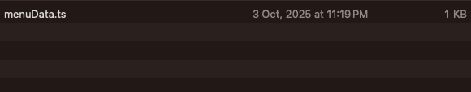
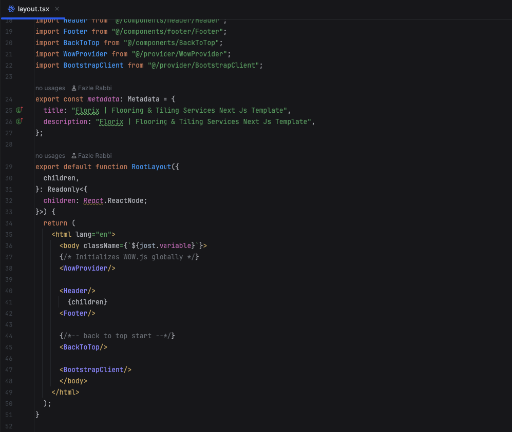
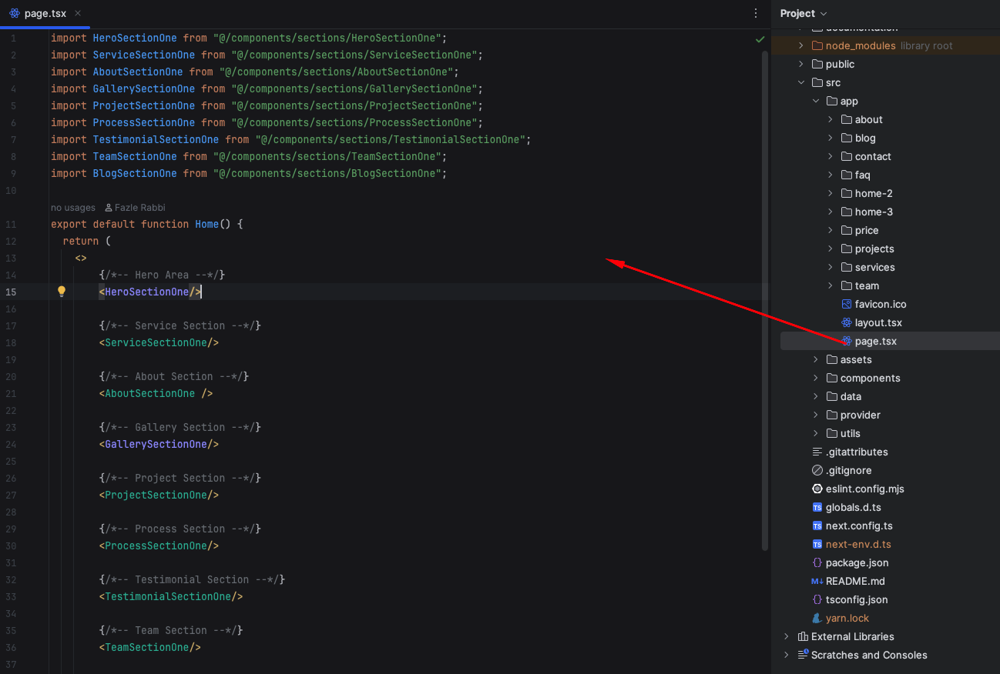
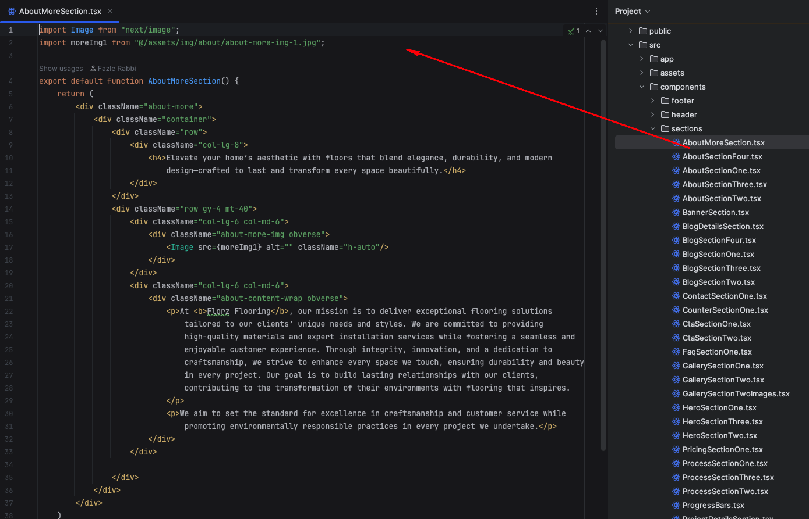
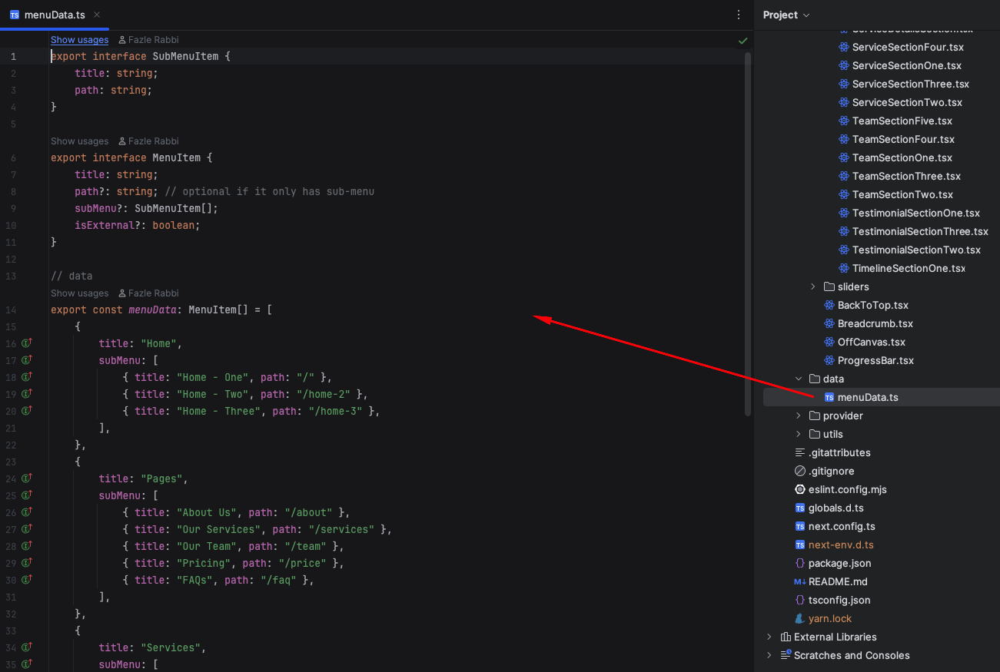
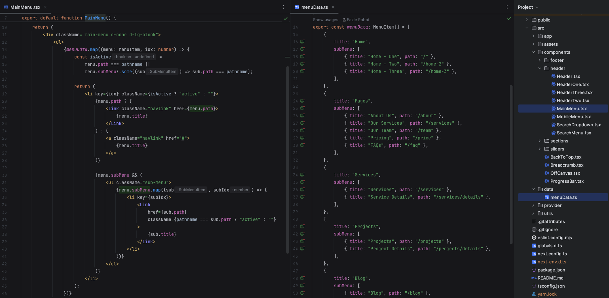

Introduction
Florix is a Flooring & Tiling Services Next.js Template. This template builds with Bootstrap-5 framework, SASS, HTML5, CSS3 and jQuery Plug-in. It’s pixel perfect design as well as lightweight and mobile-friendly. It’s also a clean, modern and minimal template that was built for all types of Flooring, Tiling, Wood Works, Carpentry, Furniture & Interior Design related companies.
Main Feature
- Built with React Next.js 15 App Router
- No jQuery Dependency
- Integrated with Bootstrap 5
- SEO optimization
- Google font include
- Fully Responsive
- W3C Validated Code
- Clean Code
- Speed Optimized
- Cross Browser Support
- Well Documented
- No console error
Installation
There are system requirements in order to install and setup Florix template and its components properly. Make sure that you are running the node.js install and npm install.
Node JS Install
Download latest version of node.js from nodejs.org. Install Node.js using downloaded file. The suggested version to install is LTS
NPM Install
You must have to npm install packages. You can run npm install from the root of your project to install all the necessary dependencies.
Development Server
Start for a development server, run npm run dev in the terminal from the root of your project to start a dev server.
What's Included
After purchasing Florix template on Template Monster with your account, go to your Download page. You can choose to download Florix template only (Installable Next.js template) or the entire Florix template package which contains the following files:
- florix.zip - An Installable Next Js template zip file. this file you need to upload
- documentation - This folder contains what you are reading now.
Local Development
To set up a Next.js project for local development, ensure that your machine has Node.js installed. If Node.js is not installed, download and install it from nodejs.org.
Once Node.js is installed, follow these steps:
- Open the project in your IDE or terminal.
-
Run the development server using one of the following commands, depending on your package manager:
- First install the dependencies
npm install(or the equivalent for your package manager) before starting the development server.-
npm:
npm run dev- yarn:
yarn dev- pnpm
pnpm dev- bun
bun dev - Open http://localhost:3000 in your browser to view your application.
- You can start editing the page by modifying `app/page.tsx`. Changes will automatically reflect in the browser.
Deploying in Server
For server deployment we recommended use a VPS server. In vps server make sure node environment is installed and configured.
- Upload the project in you VPS server,
- Connect your local machine terminal with ssh login to the server. Go to the project root path.
-
Production Builds running the command
npm run buildoryarn buildorpnpm buildorbun buildgenerates an optimized version of your application for production. HTML, CSS, and JavaScript files are created based on your pages. JavaScript is compiled and browser bundles are minified using the Next.js Compiler to help achieve the best performance and support all modern browsers. -
Start the Application
Finally, you can start the production version of your Next.js app with:
npm run startoryarn startorpnpm startorbun startYour application should now be running on the server and accessible via the server's IP address and the specified port (e.g., http://your-server-ip:3000).
-
To run a Next.js application with PM2 (Process Manager 2), you can follow these steps to set up a reliable production environment. PM2 helps manage your application process, ensuring automatic restarts in case of crashes, memory leaks, or server reboots.
-
Install PM2 Globally
npm install -g pm2- Prepare Your Next.js Application for Production
-
Install dependencies
npm install- Build the application for production
npm run build-
Start the Next.js App with PM2
To start your application with PM2, use either the script in package.json or the standalone JavaScript file.
pm2 start npm --name "nextjs-app" -- start-
Manage Your Application with PM2 Commands
PM2 provides several helpful commands to manage your application:
View running processes:
pm2 listStop the application:
pm2 stop nextjs-appRestart the application:
pm2 restart nextjs-appView application logs:
pm2 logs nextjs-app-
Set Up PM2 to Start on Server Boot
To make sure PM2 restarts your Next.js app automatically on server reboot, you can save the process list and enable the PM2 startup script:
pm2 savepm2 startup
Folder Structure
# Root Folder
# Pages Routes
Next js pages routes looks into root src -> app folder. In this folder all folders and page.tsx is a dynamic route URL.
# Components Folder
Components folder look into the root src -> components folders.
# Data Folder
Code Structure
Main template components code structure
# Layout
# Pages
# Components
# Data
Change Site Title
To change all Site title open page.tsx (src -> app -> page.tsx) update metadata title, description. If you want to change a page title got to that page add metadata section by following screenshot which are given bellow.
Change Site Favicon
To change Site favicon got to the src -> app replace the favicon.ico image by following screenshot which are given bellow.

Change Logo
To change your Site logo got to the src->components->Header.tsx by following screenshot
Customize Menu
By following the screenshot you can change the navigation menu
Credit Files
I've used the following images, fonts or other files as listed.
Images
Fonts
Icons
Support
If you need any help. Feel free to contact me anytime. I will reply in 24 hours.
Thank you for purchasing Florix template
We truly appreciate and really hope that you'll enjoy our template!